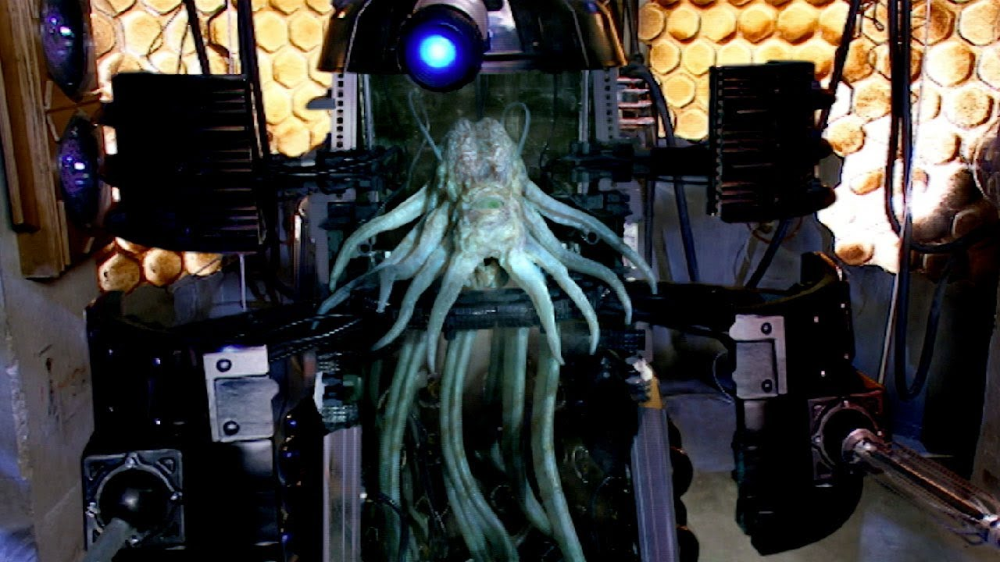

About The Dalek Empire
Daleks were a warrior race made up of genetically engineered mutants belonging to fundamental DNA type 467-989. By most accounts they were originally from the planet Skaro. The mutants were encased inside an armoured travel machine built from polycarbide and the metal Dalekanium.
The inside of a Dalek
- The Daleks openly acknowledge a single Time Lord, the Doctor, as their greatest enemy.
- The War Doctor said that Daleks were "not robots", but "savage, incredibly intelligent, living, breathing creatures housed inside a war tank".
Dalek Biology
Although the Daleks look entirely robotic, they are, in fact, cyborgs, with a living body encased in and supported by an armed and mobile outer shell of Dalekanium and polycarbide protective metal armour. Click on the links below to learn more about the Dalek